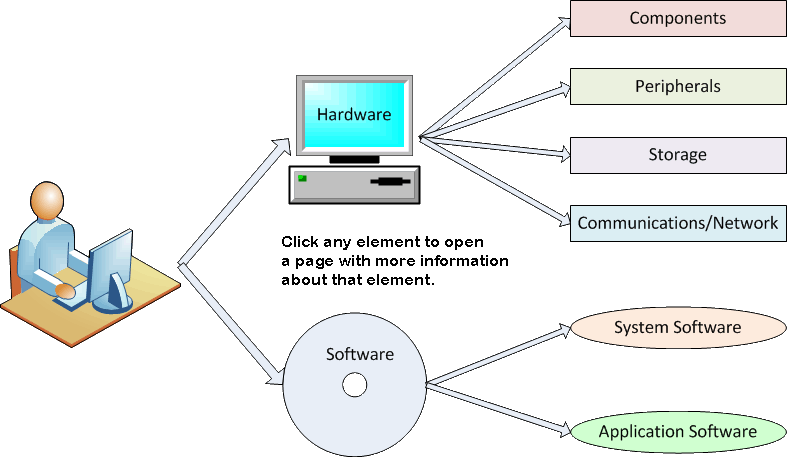

This page is intended for a first-year college-level computer concepts class.
What is a computer?
Most of us think we know what a computer is, but when we are asked to explain what a computer is to someone who has never used one, we are stumped.
We often use the term "computer system" to refer to these devices, and the word "system" is probably more accurate than the word "computer" is. In English, the word "system" refers to a collection of different parts that are designed to work together as a whole. Every computer device that we currently use--from desktops to smart phones--includes a specific set of parts and other elements.
The following map can help you identify the different elements of a computer system. Click each of the pieces to open a page that describes that part of a computer system.
